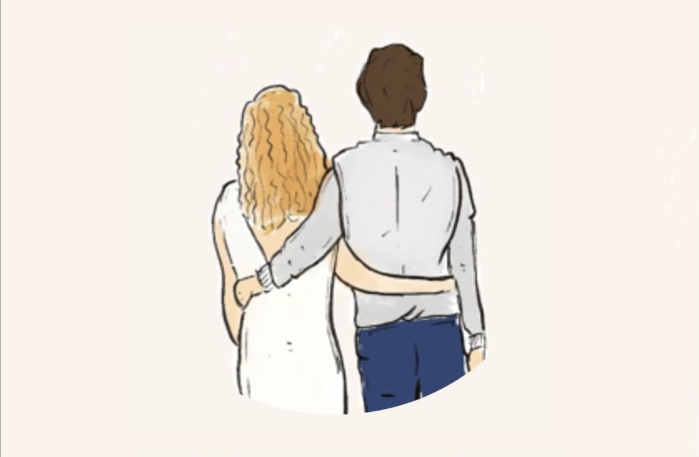

Chloé & Arthur
Mariage – 5 juin 2027

Nous avons imaginé un week-end simple, chaleureux et joyeux, dans une ambiance guinguette qui nous ressemble. Merci de réserver cette date pour venir célébrer avec nous au domaine du Petit Chambard.
Programme
Samedi 5 juin 2027
Journée du mariage
- 11h30 – Mairie du 1er arrondissement de Lyon
2 Pl. Sathonay - 12h30 – Verre convivial
Chez Marti, Pl. Gabriel Rambaud - 15h – Domaine du Petit Chambard
Villeneuve - Activité
- Vin d’honneur
- Repas
- Soirée jusqu’au bout de la nuit
Dimanche 6 juin 2027
Brunch des survivants
- 11h – Brunch
Sur le domaine